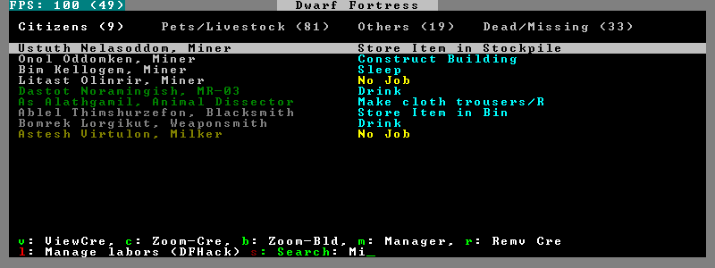
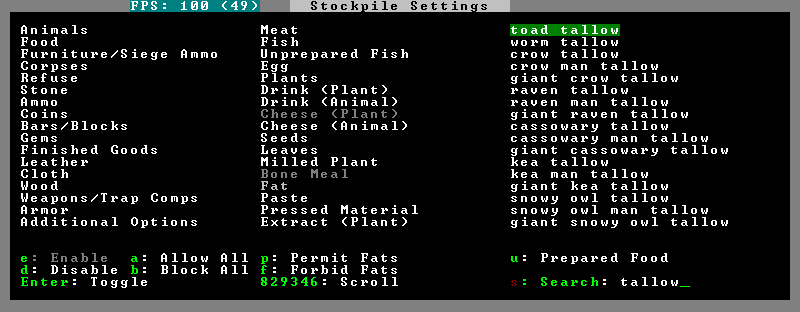

search¶
Search options are added to the Stocks, Animals, Trading, Stockpile, Noble assignment candidates), Military (position candidates), Burrows (unit list), Rooms, Announcements, Job List, and Unit List screens all get hotkeys that allow you to dynamically filter the displayed lists.
Usage¶
enable search

Searching works the same way as the search option in Move to Depot. You will see the Search option displayed on screen with a hotkey (usually s). Pressing it lets you start typing a query and the relevant list will start filtering automatically.
Pressing Enter, Esc or the arrow keys will return you to browsing the now filtered list, which still functions as normal. You can clear the filter by either going back into search mode and backspacing to delete it, or pressing the “shifted” version of the search hotkey while browsing the list (e.g. if the hotkey is s, then hitting Shifts will clear any filter).
Leaving any screen automatically clears the filter.
In the Trade screen, the actual trade will always only act on items that are actually visible in the list; the same effect applies to the Trade Value numbers displayed by the screen. Because of this, the t key is blocked while search is active, so you have to reset the filters first. Pressing AltC will clear both search strings.
In the stockpile screen the option only appears if the cursor is in the rightmost list:

Note that the ‘Permit XXX’/’Forbid XXX’ keys conveniently operate only on items actually shown in the rightmost list, so it is possible to select only fat or tallow by forbidding fats, then searching for fat/tallow, and using Permit Fats again while the list is filtered.